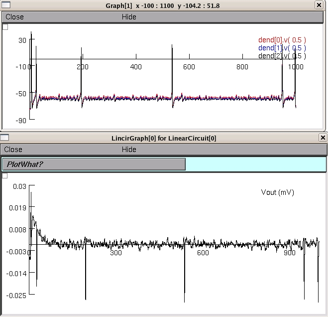

This is the readme for the model associated with the publication: Giugliano M, Gambazzi L, Campidelli S, Prato M, Ballerini L (2008) Carbon nanotubes as electrical interfaces to neurons Nanomaterial interfaces with neural cells: carbon nanomaterials and quantum dots, Parpura V, Silva GA, ed. Model usage: Auto-launch from ModelDB or download and extract the archive, then mswin: Compile the mod files by starting mknrndll and navigating to the extracted folder, and selecting to make the dll. Then double click on the mosinit.hoc file (also in the extracted folder). mac: Compile the mod files by dragging and dropping the folder on mknrndll. Then drag and drop the mosinit.hoc file onto the nrngui icon unix: Run "nrnivmodl" in the extracted folder to compile the mod files, then type "nrngui mosinit.hoc". --- Once the simulation is running select one of three choices from the radio buttons. For example selecting the first choice, Metal electrode, and then clicking on "Init & Run" in the run control window should lead to:  These simulation files were supplied by M Giugliano.